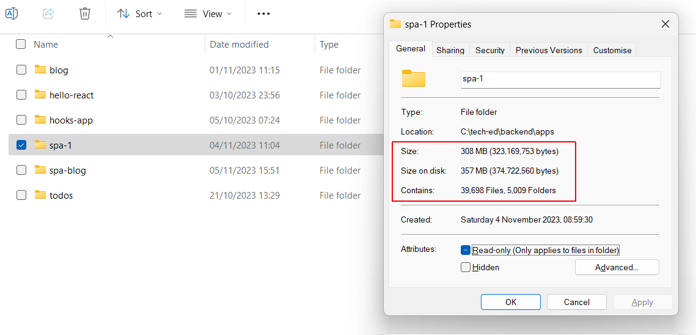
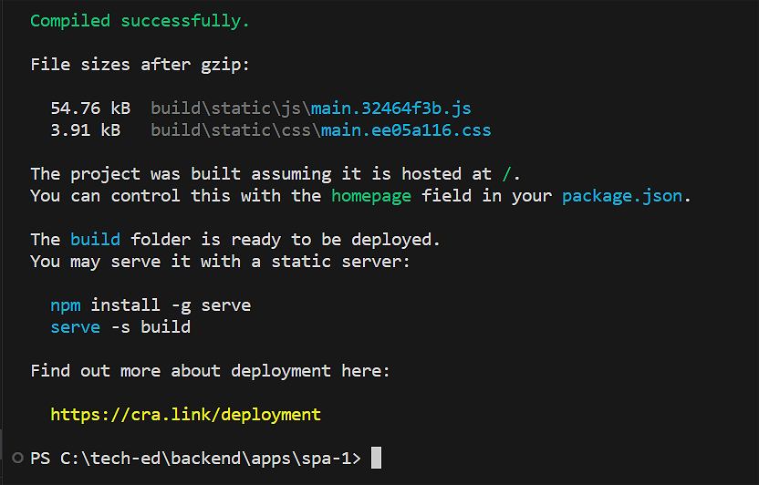
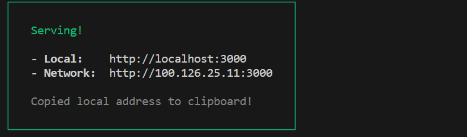
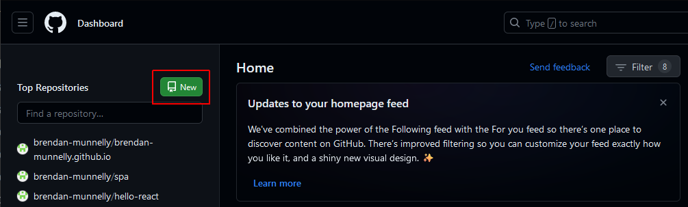
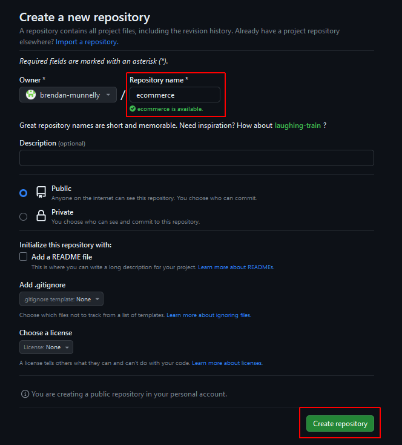
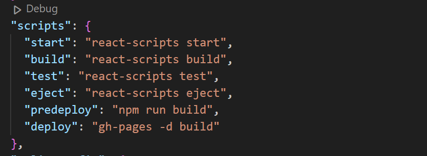

Learning Goals
At the end of this Tutorial, you will be able to:
- Run the build option within the create-react-app script to create a production-ready version of a ReactJS app.
- Deploy the build version of an app to GitHub Pages.
Hosting your ReactJS app on GitHub Pages
You will use various features of Git to deploy your ReactJS app from your local machine to the GitHub Pages remote server, where your app can be publicly accessed.
Note that Git includes three different elements:
- Git: The software you download and install on your local machine to track changes to your files. You organise your files in so-called ‘branches’. Mostly, you will be storing your files in the main branch.
- GitHub: The ‘cloud’ version of Git that runs of remote webservers. The web address of your GitHub account will look like the following: https://github.com/username
- GitHub Pages: A special branch named gh-pages that allows you use GitHub as a web hosting service. You can view your hosted files on GitHub at a web address like the following: https://username.github.io
The build option in create-react-app
Creating a ReactJS app with the create-react-app script generates a huge number of files with a very large total file size.
Clearly, it would not be practical to deploy all these files to a remote web server.
The good news is that create-react-app includes options to:
- Build a minimal version of your app by bundling the modules and assets with Webpack, and optimising the code.
- Test this minimal version on your local development web server.
- Deploy the minimal version to a remote web server such as GitHub Pages.
A typical ‘build’ version of a ReactJS app might be about 500 KB in total file size.
Let’s look at these steps in more detail.
Creating your ‘build’ ReactJS app
Follow the steps below :
- Open a new Command Prompt or, in VS Code, a new Terminal.
- Navigate to the folder that contains your app. For example:
C:\myapps\todos-app>
- In your app folder, run the command below.
npm run build - When the process completes, you should see a message similar to the following: 
You can leave this Command Prompt or Terminal open on your screen. You will be using it to complete further steps in the app deployment process.
About the /build sub-folder
Running the build script creates a new sub-folder named /build inside the folder that contains your ReactJS app. In this sub-folder are the files you will deploy to the remote web server.
Testing your ‘build’ ReactJS app
It is good practice to test the ‘build’ version of your app before deploying it to a remote web server. Here are the steps:
- Inside your app folder, run this command to install the serve package.
npm install -g serveWhen the process completes, you should see a message similar to the following.
- And now run the serve command as follows:
serve -s build
You should now see a message like that below.  - In your browser, navigate to the provided local address to verify the ‘build’ version of your ReactJS app runs without errors.
Deploying your ‘build’ ReactJS app
You now are ready to deploy your app to a remote web server. This section takes you through the steps involved.
Preparing to use GitHub Pages
Begin with these steps:
- Sign into your account on GitHub and create a new repo to host your app.  Give your new repo a name. But do not initialise it with README, license, or .gitignore files. Your repo should be empty. 
- You will be deploying your app’s build files to the gh-pages branch of your GitHub repo. So you need to install the package below in your app’s folder.
npm install gh-pages --save-dev
Preparing to your app to use GitHub Pages
By default, the build option of the create-react-app script produces a build that assumes your ReactJS app will hosted at the server root. On GitHub Pages the server root will be:
https://username.github.io
However, you will instead host your app in a sub-folder, where the sub-folder name is the name you have given to your GitHub repo. So the address of your app on GitHub Pages will be in this format:
https://username.github.io/repo-name
For example:
https://johnsmith.github.io/todos
https://johnsmith.github.io/spa
https://johnsmith.github.io/blog
To override this default, follow these steps:
- In VS Code, open your app’s package.json file and add the following line after the opening curly brace { at the top of the file:
"homepage": "https://username.github.io/repo-name/",
The top part of your package.json file should now look something like this: This will ensure the build option within create-react-app correctly infers the root path to use in the generated index.html file inside your /build folder.
This will ensure the build option within create-react-app correctly infers the root path to use in the generated index.html file inside your /build folder. - In the same file, add these two scripts to the end of the scripts section:
"scripts": { // ... other scripts here, "predeploy": "npm run build", "deploy": "gh-pages -d build" }Your scripts section should now look something like this: 
Adding your app to Git version control
You will be using Git to ‘push’ your app’s build files to the remote server, in this case, GitHub Pages. So your app folder needs to be under Git version control, and its files need to be added and committed to Git.
Here are the steps:
- Initialise Git for the folder that contains your app.
git init - Git does not automatically track changes to the files in your app folder. You need to add them with this command:
git add . - Next, commit the latest version of your files to Git with a helpful message:
git commit -m "Initial commit"
- Your final step before deploying is to link your local Git repo to your remote GitHub repo. Enter this command:
git remote add origin https://github.com/username/repo-name.git
Deploying your app to GitHub Pages
After completing all the above steps, run the command below from inside your app’s folder to deploy your app to GitHub Pages:
npm run deploy
✅ Success!
You can now access your deployed ReactJS app at a web address similar to the following:
https://username.github.io/repo-name
Every time you make changes to your app and want to update the live version, you'll need to run npm run deploy again.
Updating your deployed ReactJS app
Over time, you may make changes to your app and wish to deploy the new verion to GitHub Pages. Here are the steps:
- Update and save your app on your local server.
- From inside your app folder, update the ‘build’ version of your app for deployment.
npm run build - Test the ‘build’ version of your app locally.
serve -s build
- If your app has new files, you will need to add them to Git version control.
git add . - Commit the latest version of your files to Git with a helpful message.
git commit -m "Added user authentication"
- Finally, deploy your updated app.
npm run deploy
✅ That’s it.